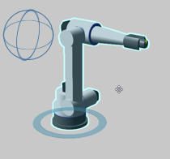
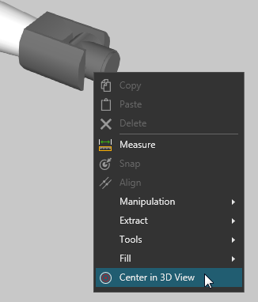

A short guide on how to navigate the 3D and drawing worlds.
Contents ShowHide
The camera of the 3D and drawing worlds can be interacted with by using a mouse.
Right mouse button (RMB) will rotate the camera but only in the 3D world. Why? The drawing world is a two-dimensional environment.

Left and right mouse buttons (LMB+RMB) will pan the camera along the horizontal and vertical axes of the viewport. What is a viewport? A viewport is the screen/window displaying a simulated environment like the 3D world.
To zoom the camera, you can rotate a mouse wheel or hold down SHIFT and the right mouse button (SHIFT+RMB). The step size or zoom factor can be changed in the Backstage view under General options.

By default, the camera will zoom through objects, including its center of interest. If you do not want the camera to zoom through its center of interest, you can change the zoom mode in the Backstage view under General options.
To focus/center the camera, you can hold down CTRL and right-click an object in a simulated environment.

Your point of view in the 3D world is indicated by a floating origin and View Selector in the upper and lower left corners of the viewport.
The floating origin represents the XYZ axes of the World coordinate system.

The View Selector represents six standard views joined together to form an interactive navigation control. A standard view will be highlighted if it resembles your current 3D world view.
Top and Down views share the same square: one click for Top and double-click for Down. In Top view, each click will rotate the camera 45 degrees.
The inner and outer edges of a standard view can be used to select a view adjacent to two sides.
The corners of a standard view can be used to select a view adjacent to three sides.
A 3D mouse (SpaceMouse) can be used to navigate the 3D world. You can enable a SpaceMouse and customize it in the Backstage view under General options. When using a SpaceMouse, a blue dot may appear in the viewport to indicate the camera's center of interest.